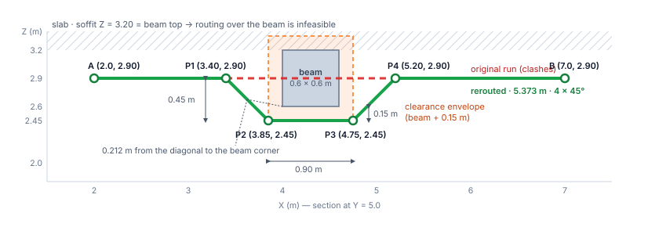
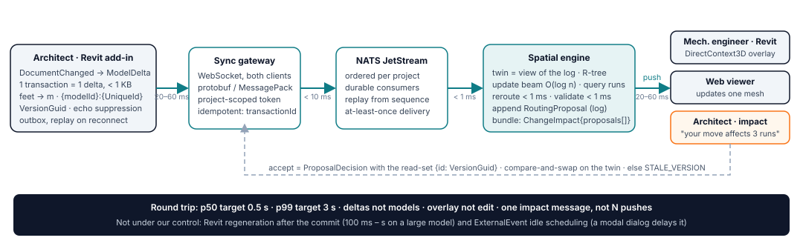
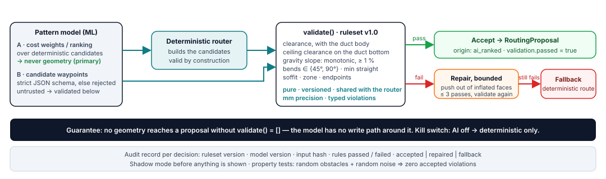

Z_c comes from the architectural model; the exercise gives none, so the worked example leaves it open, and a second case shows the ceiling becoming the limit. The void between the ceiling and the slab is the plenum. (3) The exercise's duct is a centre-line (no thickness); a real 400 × 300 mm insulated duct is the second case. (4) All values are in metres, in the project's shared coordinates; the Revit add-in ("the plugin") converts from Revit's internal unit, feet. (5) The architect moves the beam +0.40 m in X. Every number below is printed by python -m routing in the repository and asserted by its tests.Representation. Obstacles are axis-aligned boxes inflated by clearance + the duct's half-extent in the bend plane: a conservative Minkowski sum, meaning the obstacle is grown by the duct's size so the duct can be treated as a line, and it is kept a box rather than a rounded box. A 45° diagonal leaving an inflated corner keeps clearance × √2 = 0.15 × √2 ≈ 0.21 m from the real corner, so the box is safe for diagonals too. Everything is snapped to and compared at millimetres, so "exactly 15 cm" is a clean pass, not a rounding accident.
Why a geometric offset, not a search. Ducts are axis-aligned with 45°/90° fittings, and a moved beam is one blocker on a straight run. For that case an analytic line probe (the Hightower / Mikami–Tabuchi family: classic circuit-board wire routers that cast straight lines past obstacles) is exact, deterministic and sub-millisecond:
z = beam_bottom − c − h, feasible only if z − h − c_ceiling ≥ Z_c; over: z + h + c ≤ soffit; lateral: the route must stay inside the zone (the allowed routing volume). None may cut a second obstacle; a gravity pipe may never rise.NO_ROUTE(PLENUM_TOO_SHALLOW) and a coordination issue for the structural engineer, in BCF (the open BIM issue-exchange format): a sleeve through the beam, a local bulkhead, or moving the beam. A coordination tool must say why there is no route.python -m routing): inflated box X ∈ [3.85, 4.75], Z ∈ [2.45, 3.35]; over is infeasible (soffit), lateral is outside the zone (the beam spans all of Y) → under:
A (2.0, 5.0, 2.90) → (3.40, 5.0, 2.90) → (3.85, 5.0, 2.45) → (4.75, 5.0, 2.45) → (5.20, 5.0, 2.90) → B (7.0, 5.0, 2.90)
5.373 m (+0.373 m, +7.5 %), four 45° fittings, clearance 0.150 m on the flat run and 0.212 m at the diagonals. The 90° variant is 5.90 m (+18 %) with the same four fittings: 45° wins on length and pressure loss. A two-bend "V" would need 11–14° legs and passes 0.09 m from the beam: rejected. Real section (400 × 300 mm, 25 mm insulation, 15 mm flange, h = 0.19 m half-height): centre-line at 2.26 m, duct bottom at 2.07 m — feasible only if the ceiling is at or below 2.05 m (2.07 m minus the 0.02 m ceiling margin); with a ceiling at 2.70 m the answer is NO_ROUTE. After the +0.40 m move the topology is preserved: the same shape, four waypoints shifted in X.
reroute(run, obstacles, c): # routing/reroute.py
box = first obstacle whose inflated box the run hits
if box is None: return straight
for side in (under, over, left, right): # fixed order
inf = box.inflated(clearance + half_in_plane(side))
target = inf.face(side); d = |target - run.level|
lead = d if c.bend == 45 else 0
pts = [A, A.at(inf.entry - lead), (inf.entry, target),
(inf.exit, target), B.at(inf.exit + lead), B]
if not feasible(side, ...): note reason; continue
cost[side] = length(pts) - |AB| + 0.25 * bends(pts)
best = argmin(cost) or NO_ROUTE(preferred side's reason)
assert validate(best.pts) == [] # the gate's rules

| approach | deterministic | bends | latency (estimates, one plenum zone) | note |
|---|---|---|---|---|
| geometric offset (chosen: one blocker) | yes | 45°/90° by construction | < 1 ms | exact; one obstacle per probe |
| sparse orthogonal graph + A* with a turn penalty | yes | orthogonal, then a chamfer pass (each 90° step becomes a 45° offset) | 1–30 ms | the generalisation; nodes only at inflated face coordinates |
| A* on a 5 cm voxel grid (a 3-D grid of 5 cm cubes) | yes | staircase → smoothing | 50 ms – 2 s; 800k voxels per 10 × 10 × 1 m | resolution fights clearance accuracy; turn cost needs direction state |
| 3-D visibility graph | yes | arbitrary angles | ms | shortest path among 3-D polyhedra is NP-hard (no known fast exact method); a graph through obstacle corners is only an approximation |
| RRT* (random-sampling tree planner) | no (sampled) | random → smoothing | 100 ms – s | built for many-jointed robot arms, not ducts |
Capture (the plugin). Application.DocumentChanged fires after the architect's transaction commits. Filter to geometric categories and the primary design option; compare Element.VersionGuid (Revit's per-element change stamp) and a hash of the bounding box, so edits that change parameters but not geometry are dropped. One transaction = one ModelDelta, applied atomically to the twin (the cloud's lightweight copy of the model geometry). No debounce timer (a move is already one transaction); deltas for the same element are merged only while an earlier one is still in transit. Feet → metres via UnitUtils, shared coordinates via ActiveProjectLocation.GetTotalTransform(); identity {modelId}:{UniqueId}, version VersionGuid. Our own accepted-proposal transactions are recognised by name and not re-sent. A DocumentChanged event yields a live preview proposal; DocumentSynchronizedWithCentral (the architect syncing to the shared central model) makes it committed. The beam lives in the structural model, a separate RVT file that the mechanical engineer sees as a link refreshed only on reload: the twin bridges that gap (a ghost of the moved beam plus the rerouted duct before the reload, re-validation after it).
Transport. WebSocket + protobuf/MessagePack (compact binary encodings) for both desktop and web. Why not gRPC: Revit add-ins run on .NET Framework 4.8 and share one AppDomain (one in-process sandbox), so Grpc.Net.Client/Google.Protobuf clash with other vendors' add-ins, and HTTP/2 bidirectional streaming there needs WinHttp on Windows 11. In the browser, grpc-web has no client streaming. gRPC stays service-to-service.
Cloud. Gateway (project-scoped tokens, access rules per subject) → NATS JetStream (a durable, replayable message stream), partitioned by project (events are ordered per project; a zone only decides who receives an update, not the order) → spatial engine. The twin is a materialised view of the event log (the current state, computed from the stored sequence of changes): bounding volumes + centre-lines, ~100 B per element, 50k elements ≈ 5 MB, rebuilt from the log on failover, held in an R-tree (a spatial index for boxes). Update the beam in O(log n), query the runs that intersect the old or the new inflated box, reroute, validate, append a RoutingProposal. Delivery is at-least-once (a message may arrive twice, never zero times), so the consumer is idempotent: a repeat with the same (id, VersionGuid) is ignored. One beam move affecting many runs (even 200) becomes one ChangeImpact{proposals[]}, pushed to the mechanical engineer and to the architect: "your move affects 3 runs" is the most valuable real-time signal in the product.
Apply (the plugin). An ExternalEvent (Revit's hook for running add-in code when Revit is idle) draws the proposal as a DirectContext3D overlay (temporary graphics, not model elements); the Revit model is not edited until the engineer accepts. Accept is a compare-and-swap on the proposal's read-set {elementId: VersionGuid}: it succeeds only if the beam, the duct and the other obstacles are still at the versions the route was computed from; otherwise it returns STALE_VERSION and the client requests a fresh route. On reconnect, the plugin sends its outbox (changes queued while offline) and replays from the last acknowledged sequence number, or loads a zone snapshot if the log has been compacted (old entries pruned).
Within seconds, nothing freezes. Deltas (< 1 KB), never models (100 MB – 2 GB); the heavy model never leaves the client; an overlay, not an edit; one impact message, not N pushes; an incremental index. Budget (estimates, all in ms): extract 5–20 · upload 20–60 · bus < 10 · index < 1 · route < 1 · validate < 1 · persist ~5 · push 20–60 · apply 10–30 → p50 target 0.5 s, p99 target 3 s (half of all moves under 0.5 s, 99 in 100 under 3 s). Not under our control: Revit's regeneration after the commit (100 ms to seconds on a large model) and ExternalEvent idle scheduling (a modal dialog delays it).


The guarantee comes from what the model may output. The pattern model (the ML component that learns routing preferences from past projects) emits cost weights or a ranking over deterministic candidates — never geometry — so whatever it outputs, the result is a route the router built and validated. In the second, weaker-guarantee mode (the model proposes waypoints in a strict JSON schema) the same validate() runs: clearance with the duct body, ceiling clearance on the duct bottom, gravity slope (monotonic, ≥ 1 %), bends ∈ {45°, 90°}, minimum straight length between fittings, soffit, zone, endpoints. Fail → bounded deterministic repair (push waypoints out through the nearest inflated face, three passes) → re-validate → otherwise fallback to the deterministic route, valid by construction. Every decision writes an audit record (ruleset version, model version, input hash, rules passed and failed). Shadow mode first (the model runs and is logged, but its output is not shown), a kill switch, and property tests: random obstacles + random perturbations ⇒ zero accepted violations (tests/).
Contract (JSON Schema in schema/, examples in schema/examples/): schemaVersion, metres, shared coordinates, ids {modelId}:{UniqueId}, versions = VersionGuid, requestId/transactionId as idempotency keys (a resent message with the same key is processed only once). ModelDelta (plugin → engine, one committed transaction) · RerouteRequest → RerouteResponse (sync, below) · RoutingProposal inside a ChangeImpact (push) · ProposalDecision (accept/reject with the read-set, plus the created element ids) · Error {code: NO_ROUTE | STALE_VERSION | INVALID_INPUT, message, details}.
Delegation. Plugin (hers, the Revit-plugin developer's): event capture and filtering, delta extraction and unit conversion, the overlay; on accept, create the Duct elements and one NewElbowFitting per entry in fittings[]; echo suppression, the outbox. Engine (mine): gateway, twin, router, validator, persistence, push. Shared: the schemas, the example fixtures, a contract test that both teams' CI pipelines run, and a mock engine (static JSON from schema/examples/) so the plugin is built and demoed before the engine exists.
// RerouteRequest (trimmed)
{ "requestId": "req-01HZX4M2Q9", "projectId": "prj-7f2a",
"run": { "id": "duct-1", "systemType": "duct",
"start": [2.0,5.0,2.9], "end": [7.0,5.0,2.9],
"targetElementIds": ["MEP-L03:7b1c…"], "size": "400x300" },
"constraints": { "clearance_m": 0.15, "bendAngles": [45,90],
"minStraight_m": 0.30, "soffitZ": 3.2 },
"obstacles": [{ "id": "STR-L03:0a1b…", "versionGuid": "0c2f…",
"bbox": { "min": [4.0,0,2.6], "max": [4.6,10,3.2] } }] }
// RerouteResponse (trimmed) — the script's own output
{ "requestId": "req-01HZX4M2Q9", "status": "ok", "side": "under",
"waypoints": [[2,5,2.9],[3.4,5,2.9],[3.85,5,2.45],
[4.75,5,2.45],[5.2,5,2.9],[7,5,2.9]],
"fittings": [{ "at": [3.4,5,2.9], "angleDeg": 45 }, … ×4],
"metrics": { "length_m": 5.373, "added_m": 0.373, "bends": 4,
"min_clearance_m": 0.15 },
"validation": { "passed": true, "rulesetVersion": "1.0" },
"readSet": { "STR-L03:0a1b…": "0c2f…", "MEP-L03:7b1c…": "9a8b…" },
"candidates": [{ "side": "under", "feasible": true, "cost_m": 1.373 },
{ "side": "over", "feasible": false, "reason": "SOFFIT_TOO_LOW" }] }
routing/reroute.py, the routing half (geometry helpers and validate.py are in the repository)__CODE__